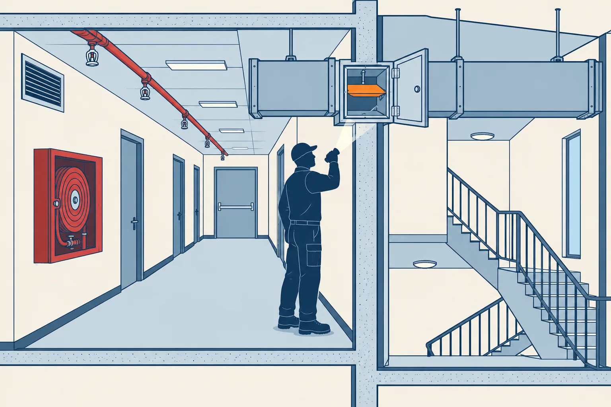
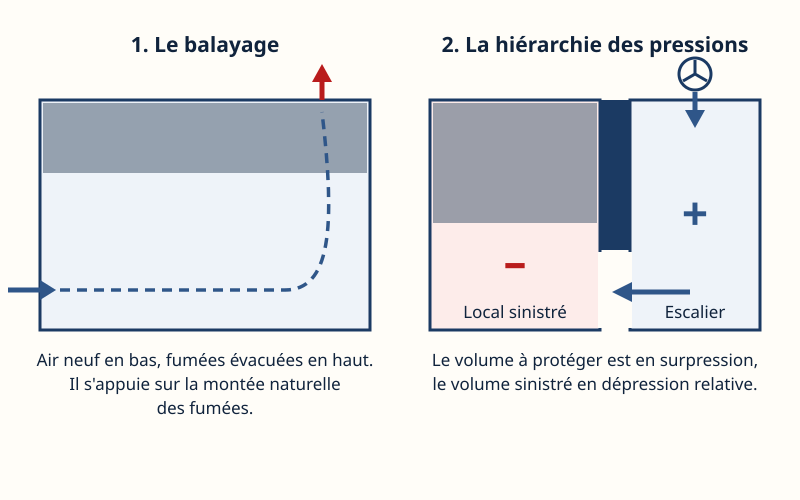
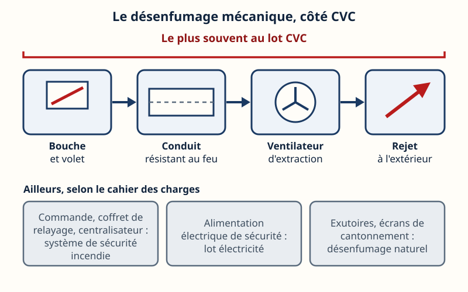
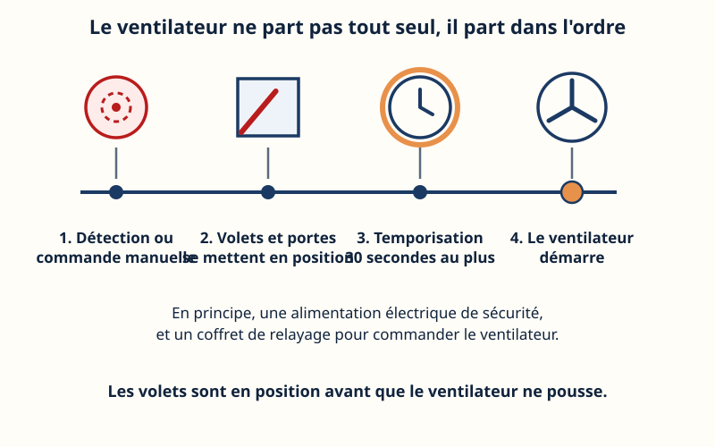
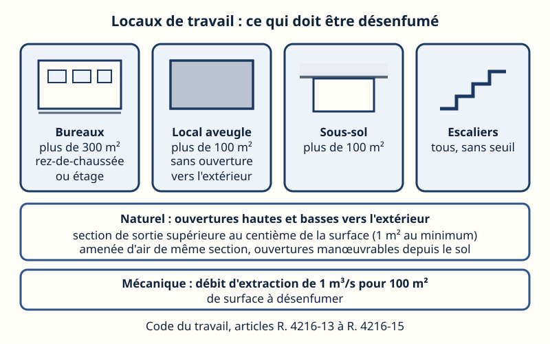
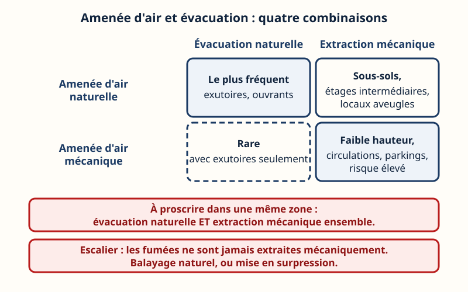

Mini-station commentée · 8 écrans et 4 questions · environ 10 minutes

Objectif
À la fin de la station, vous savez pourquoi on désenfume, distinguer balayage et hiérarchie des pressions, choisir entre naturel et mécanique, dire ce qui revient au lot chauffage, ventilation, climatisation (CVC), expliquer l'ordre de démarrage du ventilateur et l'arrêt de la CTA, et situer le cas des bureaux.
Référentiel : TP TECVC, REAC TP-00133 — CP7 (étude d'une installation de ventilation d'un bâtiment tertiaire) et CP10 (étude d'une centrale de traitement d'air). Hors périmètre de l'attestation d'aptitude fluides 2025 : aucun code fluide.
Chaque écran peut être expliqué à voix haute : le bouton « Écouter » commente ce que vous voyez. Rien n'est dit qui ne soit aussi écrit.
1 / 12
Écran 1 sur 8
Les fumées tuent avant les flammes
La première cause de décès dans un incendie, ce sont les fumées et les gaz (INRS, ED 6061). Cinq dangers : la température des gaz inhalés, l'opacité qui empêche de trouver la sortie, la baisse de l'oxygène, la toxicité (monoxyde de carbone, cyanure d'hydrogène) et l'irritation qui rend incapable de fuir.
Les fumées chaudes montent par convection et s'accumulent en partie haute : c'est la stratification. La couche s'épaissit, se refroidit, se mélange à l'air neuf, et redescend.
Objet du désenfumage (article DF 1 du règlement de sécurité des ERP) : extraire, en début d'incendie, une partie des fumées et des gaz de combustion afin de maintenir praticables les cheminements d'évacuation. Il peut aussi limiter la propagation de l'incendie et faciliter l'intervention des secours. Il ne cherche pas à éteindre : il gagne du temps praticable.

La barre orange est ce qu'il faut préserver : la hauteur libre.
Écran 2 sur 8
Deux principes : balayer ou mettre en pression
L'article DF 3 du règlement de sécurité des ERP admet, en naturel comme en mécanique :
le balayage : de l'air neuf en bas, une évacuation des fumées en haut. Il s'appuie sur le mouvement ascendant des fumées ;
la différence de pressions (INRS : « hiérarchie des pressions », ou « mise à l'abri des fumées ») : le volume à protéger est en surpression, le volume sinistré en dépression relative ;
la combinaison des deux.
Pour un escalier mis en surpression, l'instruction technique 246 (IT 246, § 5.2) borne la surpression entre 20 et 80 Pa, toutes portes de l'escalier fermées, et la met en route en même temps que le désenfumage du volume voisin.
Quel texte ? L'IT 246 est annexée à l'arrêté du 22 mars 2004 portant approbation de dispositions complétant et modifiant le règlement de sécurité contre les risques d'incendie et de panique dans les ERP (dispositions relatives au désenfumage), modifié par l'arrêté du 22 novembre 2004 ; il reste en vigueur. Ne le confondez pas avec l'arrêté du 22 mars 2004 relatif à la résistance au feu des produits, éléments de construction et d'ouvrages : celui-là est abrogé depuis le 27 mars 2026 (station « Euroclasses »).
Dans les deux cas, c'est de l'aéraulique : des débits, des pressions, des vitesses de passage. C'est là que le CVC est attendu.

Balayage : haut et bas. Pressions : plus côté escalier, moins côté sinistre.
Écran 3 sur 8
Naturel ou mécanique : quel choix ?
Naturel / naturel (amenée d'air et évacuation naturelles, par exutoires en toiture ou ouvrants en façade) : le cas le plus fréquent.
Extraction mécanique : quand le naturel est impossible (sous-sols, étages intermédiaires, locaux aveugles), ou quand la configuration exige un système très efficace (faible hauteur, circulations, parkings). Elle est plus performante et moins sensible au vent et à la température extérieure (INRS).
Amenée d'air mécanique + évacuation naturelle : rare, et seulement avec des exutoires (IT 246, § 3.3).
Deux interdits. Associer évacuation naturelle et extraction mécanique dans une même zone est à proscrire : les deux systèmes se perturbent. Et pour un escalier encloisonné, l'article DF 5 est net : « en aucun cas, les fumées ne sont extraites mécaniquement ». Balayage naturel (IT 246, § 5.1 : un exutoire de 1 m² en haut, une amenée d'air de même surface en bas), ou surpression. La dépression risquerait d'appeler les fumées du local sinistré vers l'escalier.
Circulations encloisonnées d'un ERP (article DF 6) : désenfumées de façon obligatoire au-delà de 30 m de longueur, si elles sont desservies par un escalier en surpression, si elles desservent des locaux réservés au sommeil, ou si elles sont en sous-sol.
Les deux bandes rouges sont les interdits à connaître par cœur.
Écran 4 sur 8
Amenées d'air, évacuations : le balayage
Désenfumage mécanique d'une circulation encloisonnée (IT 246, § 6.2) :
amenées d'air et extractions alternées, à au plus 15 m l'une de l'autre en ligne droite, 10 m sinon ;
bouches d'amenée d'air en partie basse (partie haute à 1 m au plus du plancher), bouches d'extraction en partie haute (partie basse à 1,80 m au moins du plancher, dans le tiers supérieur) ;
toute section comprise entre une extraction et une amenée est balayée par un débit d'au moins 0,5 m³/s par unité de passage, le débit total extrait dans une circulation étant limité à 8 m³/s.
Côté vitesses : passage de l'air aux amenées d'air inférieur à 5 m/s ; amenées naturelles dimensionnées pour la totalité du débit extrait ; amenées mécaniques à environ 0,6 fois le débit extrait, si bien que le volume désenfumé reste en dépression (IT 246, § 4.6.1 ; INRS).
Piège de conception (INRS) : augmenter le débit n'améliore pas toujours le contrôle des fumées. Un débit trop fort brasse la couche de fumée, ou la « poinçonne » : la bouche aspire alors de l'air frais. Les bouches d'extraction sont généralement dimensionnées pour 8 à 10 m/s.

L'air neuf pousse en bas, le ventilateur tire en haut : la section entre les deux est balayée.
Écran 5 sur 8
Ce qui revient au lot CVC
Le plus souvent au lot CVC, avec ce que l'IT 246 en dit :
Ventilateur d'extraction (§ 4.7) : il assure sa fonction une heure avec des fumées à 400 °C, ou est classé F400 90. Installé à l'extérieur du bâtiment, ou dans un local technique séparé par des parois coupe-feu de degré 1 heure (porte ½ heure, ferme-porte). Dimensionné pour le débit nominal augmenté du débit de fuite tolérable, de l'ordre de 20 %.
Conduits (§ 3.4.3 et 4.4) : matériaux de catégorie M0 ou A2 s2 d0, stables au feu de degré ¼ h. Conduits d'extraction : résistance au feu évaluée avec un feu intérieur, d'une durée égale au degré coupe-feu de la paroi traversée. Étanchéité : débit de fuite total inférieur à 20 % du débit exigé au niveau le plus défavorisé. Conduits collectifs d'extraction en dépression.
Volets sur les bouches (§ 3.7.1 et 4.6.2) : fermés en position d'attente ; pare-flammes pour les amenées d'air, coupe-feu pour les évacuations, d'un degré égal à celui des conduits.
Amenées d'air mécaniques : ventilateur de soufflage, vitesse aux bouches inférieure à 5 m/s.
Réception (INRS) : mesures de vitesse et de débit, et essai de l'ensemble. Le dossier d'un ERP comporte le plan des bouches, le tracé des réseaux aérauliques, les ventilateurs et les commandes (article DF 2).
Ce qui n'est pas du CVC, sauf clause contraire : la commande et le coffret de relayage (système de sécurité incendie), l'alimentation électrique de sécurité, les exutoires. La répartition des lots est fixée par le cahier des charges : elle se lit, elle ne se suppose pas.

Quatre maillons pour le CVC ; le reste se lit dans le cahier des charges.
Écran 6 sur 8
Le ventilateur qui démarre : dans l'ordre
L'ordre. Lorsque la réglementation l'impose, le désenfumage d'une zone est commandé automatiquement par la détection incendie, doublée par la commande manuelle du centralisateur de mise en sécurité incendie (CMSI) (IT 246, § 3.6.3). Pour les cages d'escalier, la commande est uniquement manuelle (MS 60, § 1 : voir la station « Le SSI »).
Les volets et les portes, ces dispositifs actionnés de sécurité (DAS), se mettent en position.
Une temporisation de 30 secondes au plus : elle laisse aux DAS le temps de fonctionner avant la mise en route des ventilateurs (IT 246, § 4.8). Elle se place entre la mise en position des DAS et le démarrage des ventilateurs : elle ne retarde pas l'ordre donné aux DAS, que le SSI de catégorie A donne sans temporisation (MS 60, § 1 : voir la station « Le SSI »).
Le ventilateur démarre. L'état ouvert ou fermé de son sectionneur est reporté au poste de sécurité ; il est commandé par un coffret de relayage (§ 4.7).
Alimentation : les installations de désenfumage mécanique des ERP sont alimentées, en principe, par une alimentation électrique de sécurité (AES) ; l'article DF 3 (§ 3) prévoit des exceptions pour certains établissements.
Avec un sprinkler, deux logiques. Dans un ERP avec un SSI de catégorie A, en présence du public, le désenfumage est commandé avant le déclenchement de l'extinction automatique à eau (DF 3, § 2). Pour les lieux de travail, l'INRS recommande plutôt que le sprinkler se déclenche avant l'ouverture du désenfumage. On lit le texte qui s'applique au bâtiment.

Le repère orange avance ; le ventilateur, lui, part en dernier.
Écran 7 sur 8
La CTA qui s'arrête
Article DF 3, § 5 : en cas de mise en fonctionnement du désenfumage, la ventilation mécanique, à l'exception de la ventilation mécanique contrôlée (VMC), doit être interrompue dans le volume concerné, à moins qu'elle ne participe au désenfumage.
L'interruption se fait par arrêt des ventilateurs, obtenu depuis le CMSI à partir de la commande de désenfumage de la zone (SSI de catégorie A ou B), ou depuis une commande placée près de la commande locale de désenfumage (SSI de catégorie C, D ou E) ;
si la ventilation de confort doit être maintenue ailleurs, l'interruption se fait par fermeture des clapets télécommandés de la zone de compartimentage concernée ;
cet arrêt fait partie de la vérification annuelle de l'installation de désenfumage (article DF 10).
Pourquoi : l'INRS note que des systèmes CVC soufflant vers le bas peuvent perturber le mouvement naturel des fumées, retarder la détection et destratifier les fumées. Il recommande une coupure automatique (asservissement) des systèmes CVC à l'activation du désenfumage.
Ce que cela change pour le bureau d'études : la CTA doit avoir une entrée d'ordre du SSI décrite au cahier des charges, et rien, dans la régulation ou la GTB, ne doit la relancer pendant le désenfumage. Les clapets coupe-feu télécommandés font l'objet de la station voisine.
À l'ordre du SSI : la CTA s'arrête, le clapet se ferme, l'extraction travaille.
Écran 8 sur 8
Le cas des bureaux, et le réflexe
Code du travail, articles R. 4216-13 à R. 4216-15 (lieux de travail) : sont désenfumés, en naturel ou en mécanique, les locaux de plus de 300 m² en rez-de-chaussée et en étage, les locaux aveugles ou en sous-sol de plus de 100 m², et tous les escaliers. En naturel : ouvertures hautes et basses vers l'extérieur, section de sortie supérieure au centième de la surface (1 m² au minimum), amenée d'air de même section, ouvertures manœuvrables depuis le sol. En mécanique : 1 m³/s pour 100 m².
L'INRS précise que l'instruction technique 246 fournit les règles d'exécution des systèmes, par renvoi de l'arrêté du 5 août 1992. Il note aussi que le Code du travail n'impose pas le désenfumage des circulations encloisonnées, sauf si le lieu est aussi un ERP. Un plateau de bureaux ouvert au public est un ERP : c'est alors le règlement de sécurité et l'IT 246.
Attention à la date. Les articles R. 4216-1 à R. 4216-34 sont abrogés à compter du 1er janvier 2027 (décret n° 2025-1100 du 19 novembre 2025, art. 2 et 5) : pour les opérations dont la demande d'autorisation d'urbanisme est déposée à compter de cette date, ou dont les travaux débutent à compter de cette date quand il n'y a pas d'autorisation, les règles des bâtiments à usage professionnel relèvent du Code de la construction et de l'habitation (chapitre IV, articles R. 144-1 à R. 144-20). L'article R. 144-8 renvoie le désenfumage à un arrêté de règlement de sécurité, sans en donner lui-même les seuils.
Le réflexe : lire la date de dépôt, le type de bâtiment, puis l'ordre de marche.

Quatre cas déclencheurs, deux règles de dimensionnement.
Question 1 sur 4
Comment désenfume-t-on un escalier encloisonné ?

Rappel de l'écran 3 — les deux interdits.
Question 2 sur 4
Où placer l'amenée d'air et l'extraction dans une circulation ?
Rappel de l'écran 4 — le balayage.
Question 3 sur 4
À l'ordre de désenfumage, comment le ventilateur doit-il démarrer ?
Rappel de l'écran 6 — l'ordre de marche.
Question 4 sur 4
Le désenfumage démarre : que devient la CTA de confort ?

Rappel de l'écran 7 — la CTA qui s'arrête.
Les correspondances de la station
Les clapets coupe-feu (même sous-ligne)
— les clapets télécommandés qui isolent une zone quand la ventilation de confort doit rester en service ailleurs.
![Un tableau de quatre cases : en colonnes l'évacuation naturelle ou l'extraction mécanique, en lignes l'amenée d'air naturelle ou mécanique. Air et évacuation naturels : le plus fréquent. Air naturel et extraction mécanique : sous-sols, étages intermédiaires, locaux aveugles. Air mécanique et évacuation naturelle : rare, avec des exutoires seulement. Air et extraction mécaniques : faible hauteur, circulations, parkings, risque élevé. Deux bandes rouges : évacuation naturelle et extraction mécanique ensemble dans une même zone à proscrire ; jamais d'extraction mécanique dans un escalier.](svg/naturel-ou-mecanique.svg)
![En haut à gauche, un cadre du système de sécurité incendie qui donne l'ordre d'arrêt ; une flèche en tirets descend vers une centrale de traitement d'air dont l'hélice s'arrête. Un conduit horizontal relie la centrale à un local, avec un clapet télécommandé qui se ferme. Le local à droite porte une couche de fumée et un conduit d'extraction surmonté d'un ventilateur, avec une flèche rouge qui monte. En animation, la centrale tourne d'abord avec des flèches d'air, puis s'arrête à l'ordre du système, le clapet se ferme et l'extraction s'établit.](svg/cta-s-arrete.svg)